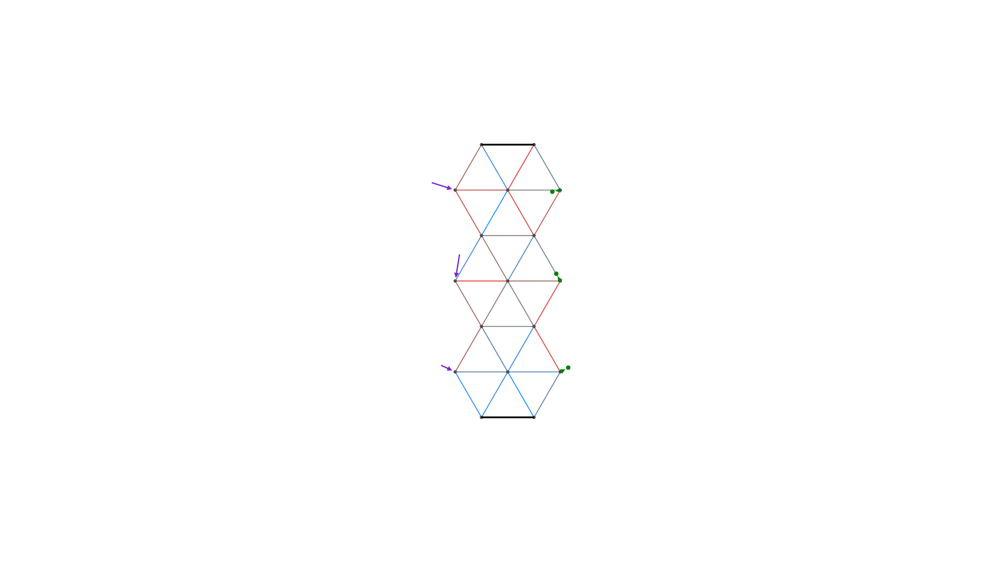

Guide
Installation & Setup
As it is still in development, this package is not available in the General Registry yet. You can still install the latest version using the Julia package manager with
julia> # type ] to open package manager
pkg> add https://github.com/Alexander-Reimer/Simulation-of-MNNsThis should install the MNN package and all dependencies automatically.
NixOS
When using NixOS, activating the development shell is necessary to make GLMakie and consequently the visualization of MNNs / graphs / ... possible:
cd /path/to/this/project
nix-shell .This will load the configuration in default.nix.
Usage Example – Simulating & Optimizing a Deformation Behaviour
Load MNN library:
julia> using MNN
Create a new MNN:
julia> net = TestNetwork(5, 4) # 5 columns, 4 rowsTestNetwork(Meta graph based on a Graphs.SimpleGraphs.SimpleGraph{Int64} with vertex labels of type Int64, vertex metadata of type MNN.Neuron, edge metadata of type MNN.Spring, graph metadata given by "Simulation", and default weight 1.0, 4, [3, 4, 3, 4, 3], Bool[0, 1, 0, 1, 0], 5, 17, 1.0, 3.4641016151377544, Dict{Int64, Vector{Number}}(5 => [1.0, 3.4641016151377544], 16 => [4.0, 5.196152422706632], 12 => [3.0, 3.4641016151377544], 8 => [2.0, 1.7320508075688772], 17 => [4.0, 8.660254037844386], 1 => [0.0, 1.7320508075688772], 6 => [1.0, 6.928203230275509], 11 => [3.0, 0.0], 9 => [2.0, 5.196152422706632], 14 => [3.0, 10.392304845413264]…), [0.0 0.0 … 4.0 4.0; 1.7320508075688772 5.196152422706632 … 5.196152422706632 8.660254037844386], [0.0 0.0 … 0.0 0.0; 0.0 0.0 … 0.0 0.0])
Create a deformation behaviour using a GUI:
b = get_user_behaviour(net)- Left-click a neuron in first or last column and then release the mouse button to select it
- If you move your mouse, you should see a blue (force vector applied to neuron) or red (goal position) arrow. Click again to save / select the current arrow for this neuron.
Or create a random deformation behaviour:
julia> b = create_deformation_behaviours(net, 1)[1]MNN.Deformation(Dict{Int64, Vector{Number}}(15 => [0.3025607099234905, 0.16142535168476801], 16 => [-0.15248661383923434, 0.2781487141858242], 17 => [-0.3031678143123898, -0.061941962381140137]), true, Dict{Int64, Vector{Number}}(2 => [-0.006283480406257192, -0.038596303888500993], 3 => [0.03270978423950576, -0.010420372656952882], 1 => [0.015481499135407684, -0.007248727778316578]))
Show MNN and created behaviour:
julia> vis = Visualizer(net, behaviour=b)Visualizer(Observable([0.0, 0.0, 0.0, 1.0, 1.0, 1.0, 1.0, 2.0, 2.0, 2.0, 3.0, 3.0, 3.0, 3.0, 4.0, 4.0, 4.0]), Observable([1.7320508075688772, 5.196152422706632, 8.660254037844386, 0.0, 3.4641016151377544, 6.928203230275509, 10.392304845413264, 1.7320508075688772, 5.196152422706632, 8.660254037844386, 0.0, 3.4641016151377544, 6.928203230275509, 10.392304845413264, 1.7320508075688772, 5.196152422706632, 8.660254037844386]), Tuple[(12, 15), (6, 10), (2, 5), (3, 7), (8, 15), (8, 12), (14, 17), (1, 4), (5, 9), (2, 6) … (10, 17), (13, 17), (5, 8), (10, 13), (10, 14), (3, 6), (5, 12), (13, 16), (1, 8), (2, 9)], Dict{Any, Observables.Observable}((10, 17, :ys) => Observable([8.660254037844386, 8.660254037844386]), (3, 10, :xs) => Observable([0.0, 2.0]), (6, 13, :xs) => Observable([1.0, 3.0]), (11, 15, :xs) => Observable([3.0, 4.0]), (5, 12, :ys) => Observable([3.4641016151377544, 3.4641016151377544]), (5, 8, :xs) => Observable([1.0, 2.0]), (1, 4, :ys) => Observable([1.7320508075688772, 0.0]), (5, 9, :ys) => Observable([3.4641016151377544, 5.196152422706632]), (2, 6, :ys) => Observable([5.196152422706632, 6.928203230275509]), (3, 6, :xs) => Observable([0.0, 1.0])…), Scene (1920px, 1080px): 0 Plots 1 Child Scene: └ Scene (1920px, 1080px), Axis (44 plots))

Simulate the behaviour:
Keep the window of the last step open, then execute
julia> simulate!(net, SecondOrderDiff(500), b, vis=vis)ERROR: MethodError: no method matching Float64(::ForwardDiff.Dual{ForwardDiff.Tag{DiffEqBase.OrdinaryDiffEqTag, Float64}, Float64, 12}) The type `Float64` exists, but no method is defined for this combination of argument types when trying to construct it. Closest candidates are: (::Type{T})(::Real, ::RoundingMode) where T<:AbstractFloat @ Base rounding.jl:265 (::Type{T})(::T) where T<:Number @ Core boot.jl:900 Float64(::IrrationalConstants.Logten) @ IrrationalConstants ~/.julia/packages/IrrationalConstants/vp5v4/src/macro.jl:112 ...
You should now see the mass points ("neurons") of the network settling into new stable positions according to the random spring constants set when you created the MNN and the forces randomly generated or set by you. This may take a while the first time because of precompilation, but should then be very fast in the same Julia session.
It should also be obvious that the neurons in the last column are far away from the set goal (except if you got really, really, really lucky).
Creating a trainer:
To optimize the spring constants, we need a Trainer object:
julia> t = Trainer([b], SecondOrderDiff(500), PPS())Trainer(MNN.Deformation[MNN.Deformation(Dict{Int64, Vector{Number}}(15 => [0.3025607099234905, 0.16142535168476801], 16 => [-0.15248661383923434, 0.2781487141858242], 17 => [-0.3031678143123898, -0.061941962381140137]), true, Dict{Int64, Vector{Number}}(2 => [-0.006283480406257192, -0.038596303888500993], 3 => [0.03270978423950576, -0.010420372656952882], 1 => [0.015481499135407684, -0.007248727778316578]))], SecondOrderDiff(500, MNN.var"#29#30"()), PPS(false, 1.15, 1.0, Set{Any}(), 250))
Training:
Now we train for 500 Epochs:
julia> train!(net, 500, t)ERROR: MethodError: no method matching Float64(::ForwardDiff.Dual{ForwardDiff.Tag{DiffEqBase.OrdinaryDiffEqTag, Float64}, Float64, 12}) The type `Float64` exists, but no method is defined for this combination of argument types when trying to construct it. Closest candidates are: (::Type{T})(::Real, ::RoundingMode) where T<:AbstractFloat @ Base rounding.jl:265 (::Type{T})(::T) where T<:Number @ Core boot.jl:900 Float64(::IrrationalConstants.Logten) @ IrrationalConstants ~/.julia/packages/IrrationalConstants/vp5v4/src/macro.jl:112 ...
Ideally, the base loss (the best loss so far) will decrease significantly.
If it hasn't, try executing the previous command again to train the MNN more.
If that still doesn't get satisfactory results, then maybe the goals and/or forces you set using the GUI were too large.
Testing:
Now check if the MNN fits the given shape morphing behaviour better:
julia> vis = Visualizer(net, behaviour=b); # update visualization of spring constantsjulia> reset!(net, vis=vis) # reset neuron positionsjulia> simulate!(net, SecondOrderDiff(500), b, vis=vis)ERROR: MethodError: no method matching Float64(::ForwardDiff.Dual{ForwardDiff.Tag{DiffEqBase.OrdinaryDiffEqTag, Float64}, Float64, 12}) The type `Float64` exists, but no method is defined for this combination of argument types when trying to construct it. Closest candidates are: (::Type{T})(::Real, ::RoundingMode) where T<:AbstractFloat @ Base rounding.jl:265 (::Type{T})(::T) where T<:Number @ Core boot.jl:900 Float64(::IrrationalConstants.Logten) @ IrrationalConstants ~/.julia/packages/IrrationalConstants/vp5v4/src/macro.jl:112 ...
As you can (hopefully) see, the end positions of the neurons now fit much better. The values of the spring constants probably also changed significantly. You can see this by looking at the colors of the springs (lines between neurons): Red means positive spring constant and blue means negative constant.